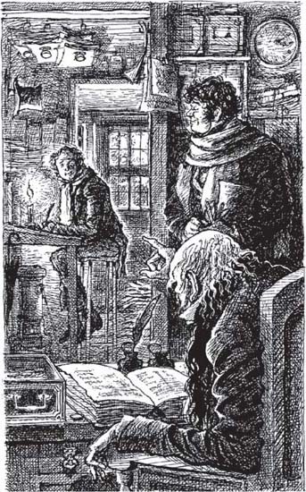

2
Listen to Part 1:

Những vị khách đến thăm Scrooge
Đêm vọng Giáng sinh, Scrooge đang làm việc tại văn phòng của mình. Ông đang ghi chép vào sổ kế toán. Ông ghi lại số tiền mà mọi người đã trả ông. Và ông cũng ghi lại số tiền mà mọi người đang nợ ông.
Thời tiết ngoài trời rất lạnh, nhưng lò sưởi lại chỉ cháy rất ít lửa. Cánh cửa phòng làm việc của Scrooge mở toang. Ông có thể nhìn vào căn phòng bên cạnh, nơi rất nhỏ và cũng rất lạnh. Lò sưởi trong căn phòng đó thậm chí còn cháy ít hơn cả lò sưởi của Scrooge. Chỉ có một cục than nhỏ xíu cháy trong lò.
Bob Cratchit làm việc trong căn phòng nhỏ bé này. Anh không thể đốt nhiều lửa hơn vì Scrooge giữ than trong phòng của mình. Và Scrooge không cho Bob lấy thêm bất kỳ cục than nào nữa.
Scrooge nói: "Nếu anh lấy thêm than nữa thì anh sẽ mất việc, Bob Cratchit!"
Vì vậy, Bob tiếp tục viết thư cho Scrooge. Anh quấn khăn quanh cổ và ngồi sát vào ngọn lửa của ngọn nến. Bob tự nhủ rằng ngọn nến ấm và nó sẽ làm ấm anh. Nhưng điều đó không đúng!
Đột nhiên, có người mở cửa chính. Một chàng trai trẻ đi từ ngoài phố vào. Chàng trông vui vẻ và tươi tắn. Mắt anh sáng ngời và khuôn mặt anh đỏ ửng vì lạnh. Chàng vui vẻ hét lên: "Chào chú! Chúc chú Giáng sinh vui vẻ!"
Scrooge đáp: "Vớ vẩn! Đồ ngốc! Giáng sinh là vớ vẩn. Đó là trò ngớ ngẩn! Vô nghĩa!"
Chàng trai trẻ nói: "Chú không nghĩ thế đâu, chú ạ."
Scrooge đáp: "Dĩ nhiên là chú nghĩ như vậy. Sao cháu lại tươi tắn thế? Cháu không có nhiều tiền mà."
Listen to Part 2:
Cháu trai hỏi: "Tại sao chú không tươi tắn, chú? Chú có rất nhiều tiền mà."
Scrooge không nghĩ ra lời đáp nên ông lặp lại: "Vô nghĩa! Ngớ ngẩn!"
Chàng trai trẻ nói tiếp: "Đừng giận dữ như vậy, chú ạ. Giáng sinh mà."
Scrooge nói: "Những người nói "Chúc mừng Giáng sinh" là những kẻ ngốc nghếch. Họ đã nói "Chúc mừng Giáng sinh" vào năm ngoái. Bây giờ họ đã già đi một tuổi và họ đã tiêu rất nhiều tiền rồi lại nói "Chúc mừng Giáng sinh". Họ thật ngu ngốc. Tôi ước gì có ai đó sẽ nấu chín họ rồi ăn họ vào bữa tối Giáng sinh!"
Chàng trai trẻ đó là Fred, con trai của Frances, em gái của Scrooge. Frances đã qua đời nhiều năm về trước. Vì thế, Fred là người thân duy nhất còn sống của Ebenezer Scrooge. Fred đã kết hôn với một người phụ nữ trẻ xinh đẹp. Anh là một chàng trai tốt bụng và thân thiện. Anh thích mọi người nên anh tiếp tục trò chuyện với chú mình.
Anh nói: "Giáng sinh là thời điểm rất quan trọng trong năm. Vào dịp Giáng sinh, mọi người tử tế và giúp đỡ lẫn nhau. Họ tha thứ cho nhau về mọi điều xấu mà họ đã làm. Họ giúp đỡ những người nghèo khổ. Tôi cảm thấy hạnh phúc trong dịp Giáng sinh. Tôi thích Giáng sinh."
Từ căn phòng nhỏ lạnh giá, Bob Cratchit đột nhiên lên tiếng: "Ồ, đúng thế! Đúng thế! Tôi đồng ý với anh!"
Scrooge hét lên: "Anh mà nói thêm một lời nữa, Bob Cratchit, thì anh sẽ mất việc. Còn cháu nữa, cháu cũng đừng nói gì thêm! Tạm biệt!"
Fred cười với ông già và nói: "Chú ơi, cháu muốn chú đến dự bữa tối với cháu và gia đình cháu vào ngày mai."

Listen to Part 3:
Scrooge hét lên: "Anh mà nói thêm một lời nữa, Bob Cratchit, thì anh sẽ mất việc."
Scrooge đáp rất to: "Tạm biệt."
Chàng trai trẻ nói: "Cháu muốn chú có một Giáng sinh vui vẻ cùng cháu và gia đình cháu."
Scrooge lại nói: "Tạm biệt."
Cuối cùng, chàng trai trẻ cũng mở cửa để đi ra. Nhưng anh vẫn vui vẻ.
Anh nói: "Chúc mừng Giáng sinh, chú. Và chúc anh Bob cũng vui vẻ."
Bob Cratchit đáp: "Chúc mừng Giáng sinh, thưa ngài." Anh mỉm cười và vẫy tay.
Scrooge tự nhủ: "Vô nghĩa! Bob Cratchit là một người nghèo khổ. Anh kiếm được mười lăm shilling một tuần. Anh phải mua thức ăn cho vợ và sáu đứa con của mình mà vẫn nói rằng đó là một Giáng sinh vui vẻ. Mọi người đều điên cả rồi - điên hoàn toàn rồi!"
Ông ta mỉm cười với Scrooge và nói: "Xin chào buổi chiều, thưa ngài. Tôi đang nói chuyện với ngài Scrooge hay ngài Marley vậy?"
Scrooge đáp: "Marley đã mất rồi. Ông ấy mất vào ngày này cách đây bảy năm - đêm vọng Giáng sinh."
Listen to Part 4:
Quý ông kia lại mỉm cười và nói: "Thưa ngài Scrooge, tôi đến đây để cầu xin sự giúp đỡ của ngài bởi vì bây giờ là Giáng sinh. Tôi muốn xin tiền để giúp những người nghèo không có tiền và không có nhà."
Scroog hỏi: "Không có nhà tù nào sao? Không có nhà tế bần nào sao?"
Quý ông kia đáp: "Có, tất nhiên là có những thứ đó."
Scrooge nói: "Tốt. Tốt lắm. Tôi rất vui. Ông có thể đưa những người nghèo khổ đó vào tù hay vào nhà tế bần mà, đúng không?"
Quý ông kia đáp: "Nhưng nhà tù và nhà tế bần là những nơi khó chịu. Tôi chắc là ngài muốn mọi người có một Giáng sinh vui vẻ. Ngài sẽ cho tôi bao nhiêu tiền vậy?"
Scrooge nói: "Không có. Không một xu nào cả. Tôi không có một Giáng sinh vui vẻ. Tôi không tin vào Giáng sinh. Tôi sẽ không cho ai một xu nào để những người khác có thể có một Giáng sinh vui vẻ. Hãy đưa những người nghèo khổ vào nhà tế bần đi."
Quý ông kia đáp: "Nhiều người sợ và ghét nhà tế bần. Họ thà chết còn hơn phải sống trong nhà tế bần."
Scrooge nói: "Tốt quá. Trên thế giới này có quá nhiều người. Hãy nói với họ rằng họ nên biến đi và chết. Tạm biệt."
Quý ông kia rời đi và Scrooge bắt đầu làm việc trở lại. Bên ngoài trời trở nên lạnh hơn, tối hơn và sương mù cũng dày đặc hơn. Trời lạnh đến mức nước đóng băng thành đá trên đường phố. Nhưng có ánh đèn sáng rực trong các cửa sổ của những cửa hàng. Mọi người đang mua đồ ăn và đồ uống ngon.
Trong tất cả các cửa hàng đều có thức ăn ngon cho dịp Giáng sinh - trái cây và hạt, bánh nướng và bánh pudding, gà tây và ngỗng. Mọi người đều mua một con gà tây hay một con ngỗng để nấu cho bữa tối Giáng sinh.
Listen to Part 5:
Chúng tôi cầu chúc cho anh một Giáng sinh vui vẻ.
Chúng tôi cầu chúc cho anh một Giáng sinh vui vẻ –
Scrooge hét lên giận dữ và cậu bé chạy mất.
Cuối cùng, Scrooge cũng quyết định rằng đã đến lúc ngừng làm việc. Bob Cratchit tắt ngọn nến và đội mũ lên. Anh không có áo khoác.
Scrooge hỏi: "Anh hẳn muốn có một ngày nghỉ vào ngày mai nhỉ?"
Bob đáp: "Dạ vâng, nếu chú đồng ý."
Scrooge nói: "Không, chú không đồng ý. Anh vẫn sẽ được trả tiền cho một ngày làm việc và sẽ không làm gì cả."
Bob nói: "Một năm chỉ có một ngày Giáng sinh thôi."
Scrooge nói: "Vô nghĩa! Chú đoán là chú không bắt anh phải làm việc vào ngày Giáng sinh được. Chẳng ai làm việc vào ngày đó cả. Nhưng anh phải đến đây rất sớm vào ngày hôm sau."
Bob rất vui vì đã đến Giáng sinh. Trên đường về nhà, anh dừng lại và chơi cùng một số cậu bé. Những cậu bé đang trượt băng từ đỉnh một ngọn đồi dốc xuống. Bob trượt băng xuống tới hai mươi lần! Sau đó, anh vui vẻ chạy về nhà với vợ và sáu đứa con của mình. Scrooge đến một quán trọ để ăn tối một mình.
Mục lục
- Trang bìa
- Mục lục
- Ghi chú về tác giả
- Ghi chú về cuộc sống ở Anh vào thế kỷ XIX
- 1 Ebenezer Scrooge
- 2 Những vị khách của Scrooge
- 3 Bóng ma Marley
- 4 Tin tức cho Scrooge
- 5 Bóng ma quá khứ
- 6 Scrooge thời niên thiếu
- 7 Giáng sinh với gia đình Fezziwigs
- 8 Cô gái yêu Scrooge
- 9 Bóng ma hiện tại
- 10 Giáng sinh với gia đình Cratchit
- 11 Giáng sinh rộn ràng khắp mọi nơi
- 12 Bóng ma tương lai
- 13 Tiny Tim
- 14 Người đàn ông thay đổi
- Những điểm cần hiểu
- Trang bản quyền